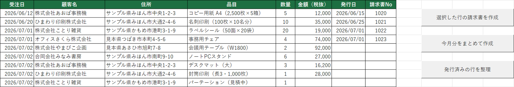
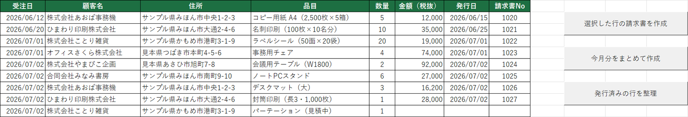
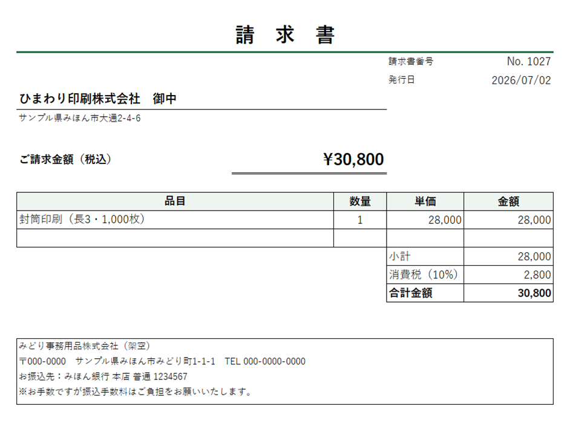

原因の切り分け：どの行で・なぜ止まるのかを特定
「実行時エラー 9」は、指定した名前のシートやブックが見つからないときに出る典型的なエラーです。
エラーが発生する行を特定し、コード内の Worksheets("受注一覧") と実際のシート構成を突き合わせて、
シート名の変更が原因であること（＝データは無事であること）を確認。この時点でまず現状をご報告します。
Excel VBA — Case Study 01 : Repair & Recovery
「昨日まで動いていたマクロが、今朝からエラーで止まる」——Excelマクロのトラブルで最も多い相談のひとつです。 このページでは、架空の「請求書作成マクロ」を題材に、私が実際に行う修正の進め方 （原因の切り分け → 修正 → 再発予防 → 文書つき納品）を、コードのBefore/Afterと画面つきでご覧いただけます。
普段は本業でExcelマクロ群の開発・保守・改修（新規作成を含む）を担当しており、 その進め方をそのまま見本にしたものです。
ご相談時の状況（見本のシナリオ）
「請求書を発行しようと『選択した行の請求書を作成』ボタンを押したら、 『実行時エラー 9：インデックスが有効範囲にありません』という英数字まじりのメッセージが出て止まってしまう。 昨日までは普通に動いていた。作った人はもう退職していて、社内に分かる人がいない。 請求書は今日中に送らないといけない」
このマクロは、受注一覧シートのデータから顧客ごとの請求書を組み立ててPDF保存し、 発行日と請求書番号を台帳に記録するもの。毎月の請求業務がこの1冊に乗っているため、 止まると業務そのものが止まります。
きっかけは、年度の切り替えでシートの名前を「受注一覧」から「受注一覧(2026)」に変えたこと。 見た目には何の問題もない、ごく自然な操作です。 しかしマクロの中には変更前の名前が残っていて、「『受注一覧』という名前のシートを探したが見つからない」 状態になっていました。ブックやデータの破損ではありません——修正のご相談では、 まずこの一点を切り分けてお伝えするところから始めます。
「実行時エラー 9」は、指定した名前のシートやブックが見つからないときに出る典型的なエラーです。
エラーが発生する行を特定し、コード内の Worksheets("受注一覧") と実際のシート構成を突き合わせて、
シート名の変更が原因であること（＝データは無事であること）を確認。この時点でまず現状をご報告します。
直書きの3か所を新しいシート名に書き換えるだけでも動きます。
しかしそれでは、次にシート名を変えた瞬間に同じ事故が再発します。
そこでシート名をモジュール先頭の定数 SHEET_ORDERS に集約し、
3か所すべてがこの定数を参照する形に変更しました。当日中に修正版をお渡しして業務を復旧します。
今後シート名を変えたくなったら、定数の1行を書き換えるだけで済みます（その場所はコード内のコメントと引き継ぎメモに明記）。 どこを・なぜ・どう変えたかをまとめた変更内容書、何をどう確認したかの動作確認書、 修正前後のソースコード一式を添えて納品しました。
| # | モジュール | 場所 | 変更の要点 |
|---|---|---|---|
| 1 | Module1 | CreateInvoiceSelected |
シート名の直書き（"受注一覧"）をやめ、定数 SHEET_ORDERS を参照する形に集約。定数を現在のシート名「受注一覧(2026)」に設定 |
| 2 | Module1 | CreateInvoicesMonthly | |
| 3 | ThisWorkbook | Workbook_Open |
変更したのはこの3か所のみで、請求書のレイアウト・番号の採番・「発行済みの行を整理」の処理には手を加えていません。 影響範囲を最小限に絞り、変えたこと／変えていないことを文書で明記するのが基本方針です。
修正後の動作確認：当月分の請求書4件を「まとめて作成」で処理
約2.8秒
PDF作成・発行日の記録・請求書番号の採番まで込み（1件あたり 約0.7秒）
※ この数値は、見本用に自作した架空のデモ環境で計測した見本・想定値であり、 実際のお客様の案件で得られた実績値ではありません。処理時間はPCの性能やデータ量により変わります。
以下はすべて、この見本のために自作したデモブックの実際のスクリーンショットです（社名・住所・金額はすべて架空）。



修正のご依頼では「直った本体」だけでなく、次に困らないための文書とソース一式をセットでお渡しします。 この事例（見本）で実際に作成したものを公開していますので、納品物の品質はここでご確認いただけます。
DOCUMENT — 変更内容書（見本）
まさにこの修正を題材にした変更内容書の実物見本です。原因・変更箇所・影響範囲・今回変えていないことを、 非エンジニアの方にも分かる言葉でまとめています。
変更内容書の見本を見るSOURCE — ソースコード一式（修正前・修正後）
この事例の修正前・修正後のVBAソース、実差分、デモブックを1コマンドで組み立てるスクリプトの一式です。 コードの書き方・コメントの残し方はここでご確認いただけます。
ソース一式を見る（GitHub）VIDEO — 動画（準備中）
このほかの納品文書（解読レポート・動作確認書・引き継ぎ手順書・ソースの保管方法）の見本は 納品文書サンプル一覧にまとめています。
「動かなくなったマクロ」のご相談は、原因が分かるまでが一番不安な時間だと思います。 まずは現状の切り分けとご報告から。お手元のブックを変更する前に、必ず元ファイルを保全した上で作業します。